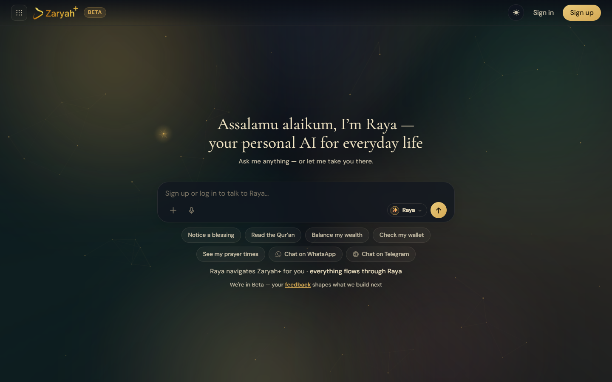

v1.0 · in production since Aug 2026open to AI engineering roles
Mohammed Zunnoon Aamir
AI Full-Stack Engineer · Digitech Evoqe · Chennai, India
I come up with product ideas, and I find practical ways to build the ideas my team brings me.
Then I ship them to production as LLM agents, RAG systems and the full-stack apps around them.
task:idea → productionagentstool useRAGguardrailsevalsReact / TypeScriptPython / FastAPIlanguages:en · ta · hi · ur · ar
Intended use
what to hire this engineer for
Direct use
Turning a one-line idea into a working product within days, then hardening it for real users.
LLM agents that use tools safely: fixed rules decide, the model explains, a person approves.
Full-stack delivery: React/TypeScript front ends; Python/FastAPI and Node back ends; Postgres, Firebase, Supabase.
Explaining technical trade-offs to non-technical stakeholders, in five languages.
Out-of-scope use
Shipping AI features without an evaluation.
Letting a model make a decision a rule should make.
Sending anything to a customer without a human in the loop.
Building a demo that only works in the demo.
From idea to shipped
my strongest trait
Brief from leadership"Islamic finance intelligence for institutions."→ shipped
A working proof of concept in under two weeks: Shari'ah screening, contract checks, and AI coworkers that can only act through an audit-logged policy gateway.
Brief from a client"A WhatsApp assistant our team can rely on."→ shipped
Built solo: multi-tenant, owner-approved actions, prompt-injection defences, encrypted backups, load-tested near 2,000 messages a second.
My own idea"What if an AI agent tested our products?"→ shipped
Claude Code with Playwright agents that plan, write and repair end-to-end tests from plain English. Used for a QA and security audit of a company platform before release.
Benchmarks
public, checkable results
Evaluation
Result
Reference
RSNA knee abnormality detection · Kaggle
top 13%
799 of 6,299 teams (final)
Pokémon TCG AI Battle · Kaggle
top 16%
1,085 of 6,807 teams (final)
Expected goals, held-out Euro 2024 · log loss ↓
0.228
StatsBomb's commercial model: 0.226
Fantasy Premier League, full-season replay · points ↑
2,231
Same bot driven by FPL's official predictions: 2,030
FPL player points on unseen 2025/26 · MAE ↓
0.97
FPL's official expected points: 1.09
The xG comparison uses a paired bootstrap and the gap is not statistically significant, so the honest word is "matches", not "beats".
Running in production right now
fetched live by your browser
FPL auto-manager · this week's advice
Loading the bot's latest report…
xG pipeline · latest matches
Fetching today's data from GitHub…
FPL model · accuracy by gameweek
Loading…
GitHub · recent public activity
Asking the GitHub API…
Experience
training history
Aug 2026 – now
AI Full-Stack Engineer
Digitech Evoqe · sister company of ZaryahX
Core engineer on ZaryahPlus: rebuilt marriage matching to spec, shipped community gatherings end to end, extended the Finance module.
Built an Islamic finance intelligence platform inside ZaryahPlus, with AI coworkers that act only through an OPA/Rego policy gateway.
Designed and built a multi-tenant WhatsApp AI work assistant for a client, solo and end to end.
Built domain-specific small language models for regulated domains, with hybrid RAG, fine-tuning, LLM-as-judge evaluation and an automated release gate.
Built the server core of an on-premise multi-agent work coordinator; shipped RAG-agent features for an education SaaS; led an AI-assisted QA and security audit.
May – Jul 2026
AI Intern
ZaryahX · ZaryahPlus
Built ZaryahPlus's Telegram assistant end to end: streamed replies from the Raya AI companion, group tasks with reminders, voice and document understanding, and a security audit.
Built the Finance module end to end: Shari'ah-compliant stock screener, live prices and charts, portfolio simulation behind a fail-closed compliance gate.
Hardened LLM guardrails across the product: output moderation, jailbreak fixes, Arabic/Urdu script handling, crisis helplines by country.

zaryahplus.com: Raya, the AI companion, on web, Telegram and WhatsApp.
Jun – Jul 2025
Full-Stack Intern
Ifelse Techsmart Solutions
Built most core features of the OnfraBizo web app in React and Node.js/Express.
A Fantasy Premier League bot that predicts every player's points, plans transfers, captain and chips four weeks ahead, and runs every hour on GitHub Actions.
Decision log
Two-stage model: chance a player plays × points if he plays, so rotation risk is modelled directly.
Caught a data leak: a community dataset's "expected points" column was recorded after the matches, so benchmarks against it only use clean 2025/26 data.
Cheap check first: a tiny standard-library script runs hourly and only wakes the heavy pipeline near a deadline.
No password stored: my real team is read from a screenshot with OCR instead of logging in.
Code available on request
Football xG Lab & Scout
Python · LightGBM · Streamlit · GitHub Actions
An expected-goals model on free StatsBomb data that matches StatsBomb's commercial model on World Cup 2022, Euro 2024 and Copa América 2024, plus a similar-player finder.
Decision log
Split by match, not by shot, so shots from the same game never leak between training and test.
Used freeze frames (where every player stood at the moment of the shot) as features, not just shot location.
Claimed "matches", not "beats": the paired bootstrap's confidence interval includes zero.